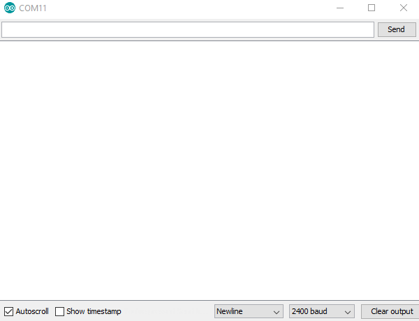

Programming
I started programming by getting the input of the button. To do that I defined the button pin and LED pins using #define. I also created a variable that holds the state of the button. Now inside the loop function, I use digitalRead to read and save the button state inside the button state variable. Then I use a if condition to turn the LEDs on and off, depending on the button state.
After uploading it worked right away!
To clean up the code, I created functions to turn the LEDs on and off. I called these functions inside the if condition.
Next, I wanted to write the state of the button in the serial. To do that, I created a SoftwareSerial. I used the Arduino Software Serial Example as a reference. Setting up the serial is easy, you just have include the SoftwareSerial using #include. Then you decide on which two pins are RX and TX. Then set up the software serial using SoftwareSerial mySerial(RX, TX). Inside the setup function use mySerial.begin(2400) to open the serial port.
To test the serial I created a character array which contains a message. I print this message in the serial using a for loop and mySerial.print, also adding a small delay so you can see it being written inside the serial.
Next up, I need to add more println inside the if condition to show the state of the button. I also added a delay to not flood the serial because software serials are limited in speed.
This is how the final code looks like.
programmingAssignment.ino
#include <SoftwareSerial.h> //Including the SoftwareSerial library
#define RX PB0 //Defining the MOSI Pin as RX
#define TX PB1 //Defining the MISO Pin as TX
SoftwareSerial mySerial(RX, TX); //Defining the SoftwareSerial Pins (RX, TX)
#define LED_PIN1 PB2 //Define LED 1 Pin to PB2
#define LED_PIN2 PB4 //Define LED 2 Pin to PB4
#define BUTTON_PIN PB3 //Define Button Pin to BP3
int buttonState = false; //Variable for the state of the Button
char message[18] = "this is a for loop"; //Message as character array
void setup() {
pinMode(LED_PIN1, OUTPUT); //LED 1 as OUTPUT
pinMode(LED_PIN2, OUTPUT); //LED 2 as OUTPUT
pinMode(BUTTON_PIN, INPUT); //BUTTON as INPUT
mySerial.begin(2400); //Opening the serial, 2400 as data rate
for(int i = 0; i < 18; i++){ //for loop, i will go from 0 to 18 in steps of 1
mySerial.print(message[i]); //Print character of array from current position of i
delay(10); //Wait a bit
}
}
void loop() {
buttonState = digitalRead(BUTTON_PIN); //Read the state of the button at the begining of the loop
if(buttonState == HIGH){ //Code below will run, when the button is pressed
turnBothLedOn(); //Calls function to turn on both LEDs
mySerial.println("Button is being pressed!"); //Writes button state in serial
}else{ //Code below will run, when button is not pressed
turnBothLedOff(); //Calls function to turn off both LEDs
mySerial.println("Button NOT is being pressed!"); //Writes button state in Serial
}
delay(100); //Wait a bit, to not spam the serial too much
}
void turnBothLedOn() {
digitalWrite(LED_PIN1, HIGH); //Turn the LED1 on
digitalWrite(LED_PIN2, HIGH); //Turn the LED2 on
}
void turnBothLedOff() {
digitalWrite(LED_PIN1, LOW); //Turn the LED1 off
digitalWrite(LED_PIN2, LOW); //Turn the LED2 off
}
Uploading the code and connecting the board
To program the board, be sure to have the ArduinoISP loaded and the bootloader burend onto the board.
Next step, use the Uploading using Programmer button with the correct settings under tools to upload the code to the custom board.
Connect the board using FTDI cable, connecting GND (black), RX (yellow) and TX (orange).
Be also sure to install the drivers for the FTDI cable.
Next, just plug in the USB end to the computer and open up the Serial Monitor. Disconnect and reconnect to reset the board and see the serial output.
